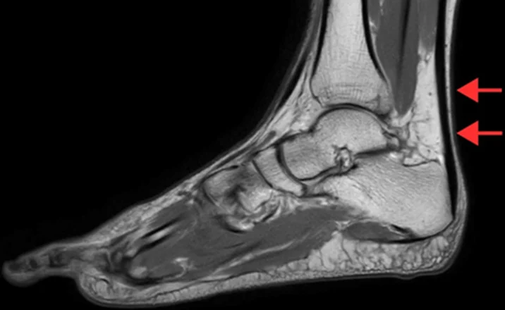

Il tendine d'Achille si attacca alla parte posteriore del calcagno. Fra il tendine e l'osso c'è una borsa, e dietro al tendine ce n'è un'altra, appena sotto la pelle. Quando il dolore è localizzato proprio lì, entro due centimetri dall'attacco, si parla di forma inserzionale.
La distinzione non è accademica: rispetto alla forma più comune, che sta qualche centimetro più in alto, cambiano alcuni dettagli del trattamento e gli accorgimenti quotidiani.

Come si manifesta
- Dolore sulla parte posteriore del tallone, nel punto in cui il tendine si attacca all'osso.
- Peggiora con le scarpe che premono dietro, soprattutto quelle rigide o con il contrafforte alto.
- Rigidità al risveglio e dopo essere stati fermi.
- Dolore in salita, sui gradini, e nei gesti che portano il piede verso la gamba.
- A volte una tumefazione visibile dietro il tallone, che può arrossarsi per lo sfregamento.
Quando preoccuparsi
Vai al pronto soccorso se
- hai sentito uno schiocco dietro la caviglia e non riesci a sollevarti sulla punta.
Contatta il medico presto se
- la zona è gonfia, calda e arrossata, o hai febbre;
- il dolore è presente a riposo e di notte;
- hai dolore e rigidità della schiena al mattino, o dolore ad altre inserzioni tendinee: può indicare una condizione infiammatoria, e la linea guida indica di approfondirlo;[1]
- hai assunto di recente antibiotici della classe dei chinoloni;
- il dolore è comparso dopo un trauma.
Cosa puoi fare tu
Fai
- Cambia le scarpe che premono dietro il tallone: è la prima cosa da fare, e spesso la più efficace.
- Un piccolo rialzo del tallone può ridurre la tensione sull'inserzione nelle fasi dolorose.
- Comincia gli esercizi di rinforzo del polpaccio, ma su una superficie piana: nella forma inserzionale si inizia così.[1]
- Gestisci il carico e aumenta gradualmente, come nella forma più comune.[1]
- Per la terapia farmacologica chiedi al medico.
Non fare
- Non fare gli esercizi facendo scendere il tallone oltre il bordo di un gradino nelle fasi iniziali: in questa forma si comincia in piano.[1]
- Non continuare a usare calzature che comprimono la zona dolente.
- Non affrettarti a fare esami diagnostici senza aver chiesto il parere del tuo medico.
Servono esami?
Come nella forma più comune, non servono se il quadro clinico è tipico. C'è però un'aggiunta specifica: nella forma inserzionale la linea guida indica di eseguire anche una radiografia laterale del calcagno, per escludere un'alterazione ossea.[1]
L'ecografia resta l'esame preferito quando serve approfondire, e come sempre non va usata per prevedere il decorso o per controllare la risposta al trattamento.[1]
Le cure, e quanto funzionano
L'impostazione è la stessa della forma centrale, con gli adattamenti descritti sopra: educazione, gestione del carico ed esercizio progressivo di rinforzo del polpaccio per almeno dodici settimane, iniziando su superficie piana.[1]
Se dopo circa tre mesi non c'è miglioramento si discutono le opzioni aggiuntive, fra cui le onde d'urto e le terapie iniettive, da indicare correttamente nell'ambito di un percorso che comprenda l'esercizio. Le infiltrazioni di corticosteroide vanno usate con cautela, e in questa sede la cautela è ancora maggiore per la vicinanza dell'inserzione tendinea.[1]
La chirurgia si considera solo dopo almeno sei mesi di trattamento attivo, valutando il beneficio atteso rispetto al percorso non chirurgico e il rischio di complicanze.[1]
Un elemento pratico che conta più di quanto sembri: la calzatura. In questa forma la compressione meccanica è spesso ciò che mantiene il problema, e correggerla è parte del trattamento.
Quando serve lo specialista
Per distinguere la forma inserzionale dalle altre cause di dolore posteriore del tallone, fra cui il conflitto posteriore e, nei ragazzi in crescita, il morbo di Sever; e per riconoscere il sospetto di una condizione infiammatoria, che cambia completamente il percorso.
E, se il dolore non si muove dopo un percorso ben condotto, per discutere, numeri alla mano, quale trattamento sia più idoneo per la tua situazione.
Da dove vengono queste informazioni
- de Vos RJ, van der Vlist AC, Zwerver J, Meuffels DE, Smithuis F, van Ingen R, van der Giesen F, Visser E, Balemans A, Pols M, Veen N, den Ouden M, Weir A. Dutch multidisciplinary guideline on Achilles tendinopathy. Br J Sports Med 2021. doi:10.1136/bjsports-2020-103867
Scheda aggiornata il 9 novembre 2026. Prossima revisione prevista entro novembre 2028.
Trattamenti citati in questa scheda
Qui sopra c’è scritto se e quando sono indicati. Queste pagine spiegano in che cosa consistono.
Cerca un'altra scheda
Un disturbo, un trattamento, o anche solo il punto che fa male: «formicolio», «tallone», «spalla congelata».